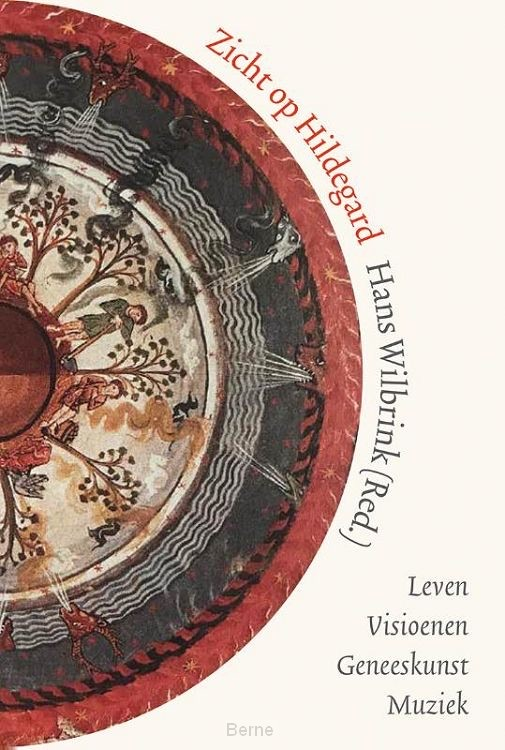

Boek “Zicht op Hildegard; leven, visioenen, geneeskunst, muziek”
Hildegard van Bingen was een sterke vrouw met veelzijdige talenten, blijkt uit het eind 2020 verschenen Zicht op Hildegard. Dit boek is een toegankelijke inleiding op het leven en werk van deze twaalfde-eeuwse benedictines, waarna je beslist op bedevaart wilt naar haar klooster in het Duitse Eibingen. In Zicht op Hildegard laten negen specialisten hun licht schijnen op een deelgebied van haar leven en werk. Bij elkaar levert dat een veelzijdig en indringend portret op.
Auteurs
Sociaal wetenschapper dr. Hans Wilbrink besteedt aandacht aan de maatschappelijke invloed van Hildegard toen en nu. Zuster Philippa Rath o.s.b. van de Hildegard-abdij in Eibingen laat zien dat zij een inspirerend voorbeeld is voor onze tijd. Theologe Kitty Bouwman bespreekt visioenen in het werk van Hildegard. Kunstkenner Felicia Dekkers werpt licht op twee handschriften. En classica en filosofe Mieke Kock-Rademakers gaat in op Hildegards eerste visioenenboek Ken de wegen. Velen kennen Hildegard van haar buitengewone kruidenkennis of via haar prachtige muziek. Ook die aspecten komen aan de orde, in artikelen van arts dr. Lutgart Gillis, en musicologen dr. Hanna Rijken, dr. Rebecca Stewart en drs. Marsja Mudde.
Redactie
De redactie van dit boek was in handen van dr. Hans Wilbrink, neerlandicus en sociaal wetenschapper met een bijzondere belangstelling voor theologie. In 2006 promoveerde hij op onderzoek naar de mysticae Hildegard van Bingen en Hadewijch van Brabant. Hij is oprichter van de Nederlandse Hildegard van Bingen-website.
Boekgegevens
Zicht op Hildegard. Leven, visioenen, geneeskunst, muziek. Paperback | 160 pagina’s | ISBN: 9789089723734 | Prijs € 24,95 | In de boekwinkels per 02-11-2020
Bestellen
Het boek is bij voorkeur rechtstreeks te bestellen bij Marsja Mudde door een bericht of een telefoontje naar 06-18277792.